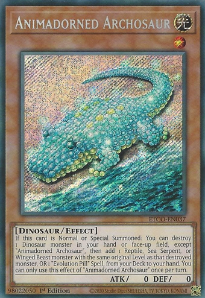

since Anjelly released a few years ago. The gameplan is still the same as it involves OTKing
the opponent, but is now more consistent. Their combo is easily stopped however if you know how
what they do and can be prone to bricking


The list is created from the current online tournaments that are happening and only the top 8 are the ones under review.
| Eldlich | One of the most consistent control decks at the moment. Similar to True Dracos, the gameplan is to turbo out Golden Lord and castle him with the spell and traps. His recursion is "free" and the deck is very consistent ending on Golden Lord and backrow. |
|
|---|---|---|
| Adamancipator | The current reigning combo deck which is to use its many starters to end on a bunch of synchro monsters. The deck has a lot of starters from the archetype itself, but what needs to be taken note of is the amount of rock support that has been printed in the past. There were already a lot of strong cards that supported rock decks, but there has never been a good deck to be used in. |
|
| Invoked | Invoked variants have been gaining repopularity recently with how splashable the engine is while being able to simulatneously bansih key monsters from the opponent's graveyard such as Eldlich the Golden Lord. Shaddoll Invoked which was around before events were cancelled are also returning due to the strength of an end board consisting of Invoked Caliga(One monster effect per turn) and Shaddoll Winda(One special summon per turn) |
|
Madolche | With their new support in Eternity Code, madolche has been seeing some play for the first time since Anjelly released a few years ago. The gameplan is still the same as it involves OTKing the opponent, but is now more consistent. Their combo is easily stopped however if you know how what they do and can be prone to bricking |
|---|---|---|
|
Salamangreat | Despite the hits to Salamangreat, the deck is still able to top as long as the player knows how to resource manage effectively and knowing when to use the counter trap Salamangreat Rage properly. With Jack Jaguar being able to recycle monsters while being a free summon and Gazelle being able to foolish burial the traps means that the deck is still relatively consistent, but not as consistent as before. |
|  | Dinosaurs | With the new card Animadorned Archosaur and True King Lithosagym released from the banlist at 1, Dinosaurs are making a comeback. The general end board usually consists of Evolzar Dolkka or Laggia, amd Ultimate Conductor Tyranno with a possible Miscellaneousaurus in hand for protection. What some decks are doing is running the one Barrier Statue of the Storms to end on using Simorgh, Bird of Sovereignty. The deck is relatively consistent with the amount of searching/dumping available. |
|
Sky Striker | With all the massive hits that Sky Striker have been hit with, the deck is now incredibly difficult to pilot properly. With Engage now banned, the overall consistentcy of the deck has fallen and along with their grind game. Similar to Zoodiacs, the deck was highly consistent and mainly ended on the same board every time which, although was not strong, it could be repeated every turn even if the board would be broken every turn. The deck requires a lot more critical thinking and one misstep could cost the whole game. Sky Striker is a tier 2 deck in capable hands, but a tier 3 or 4 if the player can't think a few steps ahead. |
|
Subterror | The control heavy subterror deck has been barely hanging on in the current meta. Although the deck is still relatively consistent as Hidden City is a one card combo, the pure version is still very fragile. The deck relies on blowout cards if the die roll is lost such as Lightning Storm, and Nibiru the Primordial Being. Of course, the deck also loses to Lightning Storm as the deck is backrow heavy. |
 |
Altergeist | A previous topping deck that is attempting to return is the control deck Altergeist. With Multifaker back at three from the previous one, players are trying to revamp the deck to fit the current meta. Although the deck does fall short as the deck is not too consistent and it does take some time for it to gain momentum. The deck generally ends on a monster bounce and whatever backrow they managed to draw. It's very weak going second as they heavily rely on their one monster effect to go through. |
|---|